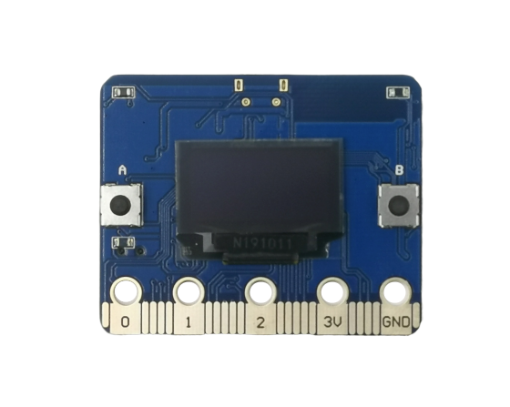
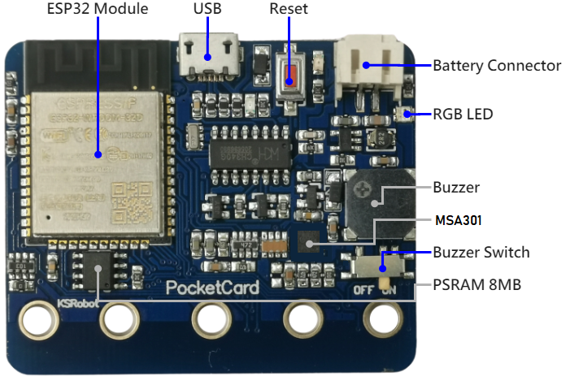
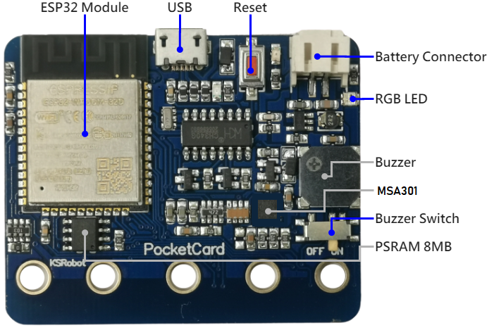
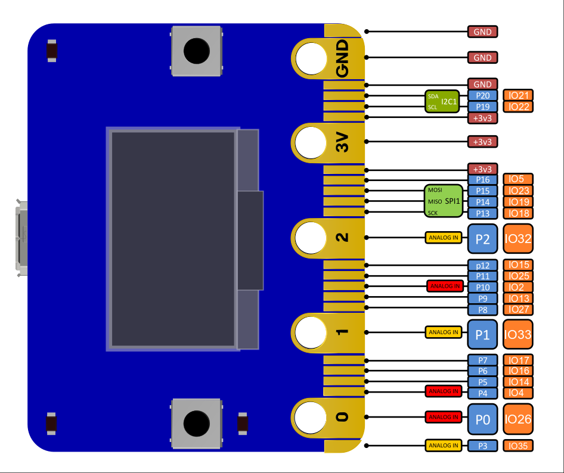

PocketCard Lite Introduction
PocketCard Lite board is 5 cm x 4 cm in size, it houses a 20-Pin edge connector, built-in 1.3 in. oled panel, two photosensitive light sensors, two programmable buttons, an ntc thermistor, a buzzer and a MSA301 3-axis motion sensor.

| PocketCard | |
|---|---|
| CPU | Dual-core 32bit Xtensa LX6, up to 240MHz |
| RAM | 520 KB |
| ROM | 448 KB |
| Flash | 4096 KB |
| PSRAM | 8192 KB (Version2) |
| Bluetooth | Bluetooth v4.2 BR/EDR and BLE |
| WIFI | 802.11 b/g/n/e/i |
| Panel | 0.96 / 1.3 in. oled panel |
| Photosensitive sensor | light sensors x2 |
| Temperature sensor | ntc thermistor x1 |
| RGB LED | ws2812b x1 (Version2) |
| Button | programmable buttons x2 |
| Buzzer | buzzer x1 |
| Buzzer Switch | buzzer Switch x1 |
| Micro USB | micro USB(for UART) |
| Motion sensor | MSA301 3-axis motion sensor x1 |
| IO interface | compatible with most micro:bit I/O features |
| Size | 5x4cm |
Hardware interface
 

the I/O space configuration is as follows:
| 主板元件 | ESP32 腳位 | |
|---|---|---|
| Botton A | GPIO 14 | Digital Input |
| Botton B | GPIO 25 | Digital Input |
| Light Sensor(A) | GPIO 39 | Analog Input |
| Light Sensor(B) | GPIO 36 | Analog Input |
| Temperature Sensor | GPIO 34 | Analog Input |
| Buzzer | GPIO 26 | PWM |
| Oled Panel(SCL) | GPIO 22 | Digital Output |
| Oled Panel(SDA) | GPIO 21 | Digital Output |
| MSA301(SCL) | GPIO 22 | Digital Output |
| MSA301(SDA) | GPIO 21 | Digital Output |
| RGB Led | GPIO 12 | Digital Output |
PIN definitions
The edge interface is compatible with micro:bit 